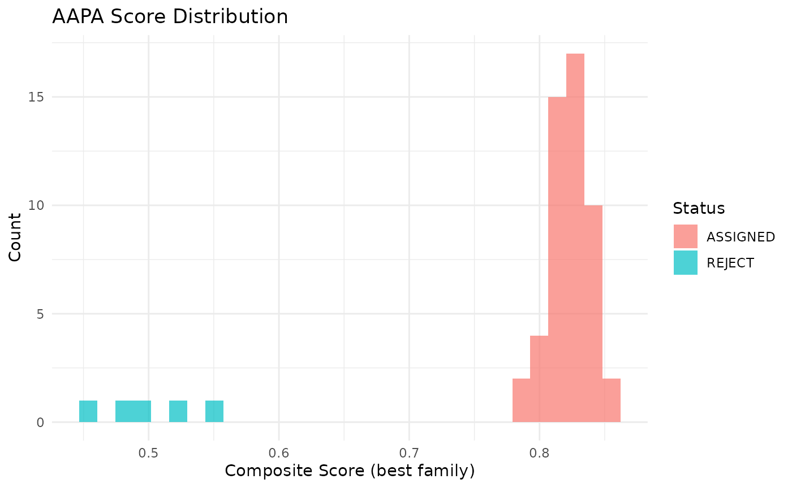
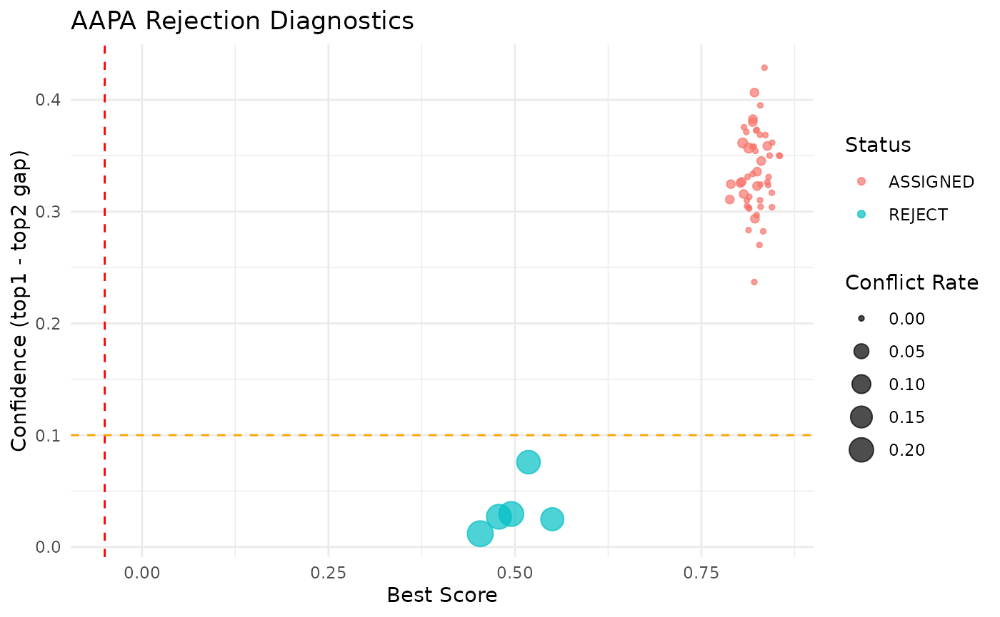

Introduction
AAPA (Anchor-Assisted Pedigree Assignment) is an R package for high-throughput full-sib family assignment. It is designed for scenarios where:
- Candidate parents are known (enumerable family set)
- Each family has one or more anchor individuals with high-confidence family labels
- A large number of test individuals need to be assigned to families (or rejected as unknown)
Quick Start
1. Simulate example data
library(aapa)
sim <- simulate_aapa_data(
n_families = 5,
n_snps = 200,
n_offspring_per_family = 10,
n_anchors_per_family = 2,
n_unknown = 5,
missing_rate = 0.01,
error_rate = 0.001
)
#> ℹ Simulating data: 5 families, 200 SNPs
#> ✔ Simulated 75 individuals x 200 markers
str(sim, max.level = 1)
#> List of 4
#> $ genotype : int [1:75, 1:200] 1 1 1 0 1 2 0 0 2 1 ...
#> ..- attr(*, "dimnames")=List of 2
#> $ parents :'data.frame': 5 obs. of 3 variables:
#> $ anchors :'data.frame': 10 obs. of 3 variables:
#> $ true_labels: Named chr [1:65] "FAM001" "FAM001" "FAM001" "FAM001" ...
#> ..- attr(*, "names")= chr [1:65] "FAM001_ANC1" "FAM001_ANC2" "FAM001_OFF1" "FAM001_OFF2" ...2. Prepare input objects
geno <- sim$genotype
parents_df <- sim$parents
anchors_df <- sim$anchors
# Build parents object
parents <- lapply(seq_len(nrow(parents_df)), function(i) {
list(
family_id = parents_df$family_id[i],
sire_id = parents_df$sire_id[i],
dam_id = parents_df$dam_id[i],
sire_geno = geno[parents_df$sire_id[i], ],
dam_geno = geno[parents_df$dam_id[i], ]
)
})
names(parents) <- parents_df$family_id
class(parents) <- "aapa_parents"
# Build anchors object
anchors <- structure(
anchors_df,
class = c("aapa_anchors", "data.frame"),
geno = geno[anchors_df$individual_id, , drop = FALSE]
)3. Run quality control (optional)
qc_result <- qc_filter(geno, max_snp_missing = 0.1,
max_ind_missing = 0.2, min_maf = 0.01)
#>
#> ── AAPA Quality Control Summary ──
#>
#> Individuals: 75 → 75 (removed 0)
#> SNPs: 200 → 198 (removed 0 missing, 2 low MAF)
geno_clean <- qc_result$genotype
# If QC removes markers, AAPA will align parents and anchors to the
# filtered marker set by marker name during assignment.4. Run family assignment
result <- aapa_assign(
genotype = geno_clean,
parents = parents,
anchors = anchors,
alpha = 1.0,
beta = 1.0,
top_k = 3,
tau_conf = -0.05,
tau_rej = 0.1,
max_conflict = 0.1
)
#> ℹ Step 1/4: Computing Mendelian conflict rates...
#> ℹ Step 2/4: Computing anchor kinship scores...
#> ℹ Step 3/4: Computing composite scores...
#> ℹ Step 4/4: Top-k pruning and rejection filtering...
#> ✔ Assignment complete: 50 assigned, 5 rejected
print(result)
#>
#> ── AAPA Assignment Result ──────────────────────────────────────────────────────
#> Total individuals: 55
#> Assigned: 50 (90.9%)
#> Rejected: 5 (9.1%)
#> Families: 5
#> Parameters: alpha=1, beta=1, top_k=35. Evaluate results
# Compare to true labels
asgn <- result$assignment
assigned <- asgn[asgn$status == "ASSIGNED", ]
true_labels <- sim$true_labels
correct <- sum(
assigned$assigned_family == true_labels[assigned$individual_id],
na.rm = TRUE
)
cat(sprintf("Accuracy: %.1f%% (%d/%d)\n",
100 * correct / nrow(assigned), correct, nrow(assigned)))
#> Accuracy: 100.0% (50/50)6. Visualize results
# Score distribution
plot_score_distribution(result)
#> Warning: `aes_string()` was deprecated in ggplot2 3.0.0.
#> ℹ Please use tidy evaluation idioms with `aes()`.
#> ℹ See also `vignette("ggplot2-in-packages")` for more information.
#> ℹ The deprecated feature was likely used in the aapa package.
#> Please report the issue at <https://github.com/luansheng/AAPA/issues>.
#> This warning is displayed once per session.
#> Call `lifecycle::last_lifecycle_warnings()` to see where this warning was
#> generated.
# Rejection diagnostics
plot_rejection_diagnostics(result)
Method Overview
AAPA uses a three-component scoring system:
Mendelian Compatibility: For each SNP, check whether the test individual’s genotype is compatible with the expected offspring genotypes from the candidate parents.
Anchor Kinship: Compute IBS (Identity-By-State) similarity between the test individual and the family’s anchor individuals.
Composite Score: where is the conflict rate and is the kinship score.
Rejection Rules
Individuals are rejected (labeled REJECT) if any of
these conditions are met:
- Best score below absolute threshold (
tau_conf) - Gap between top-1 and top-2 scores too small
(
tau_rej) - Mendelian conflict rate too high (
max_conflict) - All candidate families show high conflict (suspected unknown family)